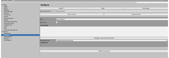

Volarela est un Serious Game en Point ‘n’click pour enfants de 8-12 ans.
Mêlant support physique et support visuel, le jeu va entraîner l’enfant dans
un univers fantastique aux travers de diverses enquêtes et énigmes. J’ai effectué
un stage de 2 mois dans cette entreprise durant lequel j’ai participé à la création
de plusieurs Tools dont le but était d’améliorer le workflow de l’équipe.
Avec mon tuteur de stage, nous avons créé un éditeur de dialogues nodale basé sur les attributs du C#.
J’ai été chargé de la création des différents nodes, allant d’un simple texte au choix multiple jusqu’
aux nodes faisant des liens vers d’autres dialogues.
Nous avons également créé des add-on dans le Project Setting d’Unity, comprenant différentes informations
customisables comme des personnages ou des définitions de mots complexes.

Compétences acquises :
J’ai appris les bases de Tool Design sur Unity en créant des Custom Inspector , des Project Settings ou encore
des interfaces nodales .
J’ai aussi amélioré mes compétences en sérialisation.
Enfin j’ai appris à respecter un cahier des charges fixe, à suivre un planning imposé par mon tuteur de stage
et à travailler avec une architecture de code nouvelle pour moi.